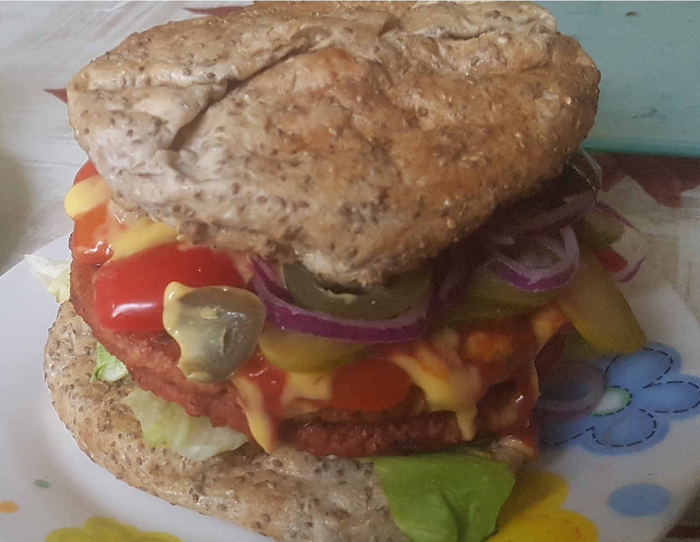

Healthy Homepage
Burger
Zutaten
2 Portionen
Burger Brötchen
- 50g Mandelmehl
- 25g Flohsamenschalen
- 15g Chia Samen
- 3g Salz
- 3g Backpulver
- 1EL Apfelessig
Burger Patties
- 2-4x vegane Burger-Patties (für einfache oder doppelte Burger, je ca 110g)
Belag
- 20g Salat
- 50g Tomate
- 20g Gurke
- 10g Jalapenos
- 20g Zwiebeln
- 30g Sauce nach Wahl
Zubereitung
Burger Brötchen
Alle trockenen Zutaten in einer Schüssel gut vermischen. Als nächstes den Essig und ca. 180ml kochendes Wasser dazu geben.
Nun alles verrühren und wenn der Teig etwas abgekühlt ist, etwas Kneten. Wenn die Struktur gleichmäßig ist, sollte der Teig noch etwa 10 Minuten ruhen. Währenddessen kann der Ofen auf 200°C Umluft vorgeheizt werden.
Anschließend kann er zu Brötchen geformt werden. Ich finde es einfacher Boden und Deckel direkt getrennt zu formen. Dazu den Teig in gleich große Stücke teilen und diese, um genau gleiche Portionen zu erhalten, am besten abwiegen.
Zuletzt kann man sie zu Kugeln formen und auf einem Backblech mit Backpapier platt drücken, um die gewünschte Breite zu erhalten.
Die Brötchen sind nach ca 20-25 Minuten fertig. Falls sie sich zu stark aufblähen, kann beim nächsten mal weniger Wasser verwendet werden.
Burger Patties
Hierfür benutze ich fertig gekaufte vegane Burger. Da ich gerne doppelte Burger mache, presse ich die Patties mithilfe eines großen Tellers in einem Backpapier dünner. Das Backpapier verhindert, dass die Patties am Teller oder am Untergrund festkleben. Jetzt können die Burger gebraten werden.
Wenn man Kalorien sparen möchte, empfehle ich nicht mehr als etwa 1 EL Öl zu benutzen. Aufgrund der hohen Energiedichte (knapp 900kcal/100g) sollte man damit so sparsam wie möglich sein.
Belag
Während die Burger und Brötchen fertig werden, kann nun das Gemüse geschnitten werden. Sobald alles fertig ist, kann nach Belieben belegt werden.
Da die Kalorien des Gemüses ziemlich vernachlässigbar sind, kann man davon jede Menge verwenden. Dadurch kann ein besseres oder länger anhaltendes Sättigungsgefühl erzeugt werden.
| Nährwerte | |
|---|---|
| Kohlenhydrate | x g |
| Fett | y g |
| Proteine | z g |